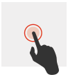
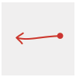

User action
Gesture
Description
Action(s)

The Single Character Widget supports the following gestures: single tap, long press, return, backspace, space.
Each gesture (except for space gesture) can be associated with any action.
The space gesture cannot be configured: Any line drawn from left to right in the final application will insert a space. Note that you also have the option to create a space button in the UI.
User action |
Gesture |
Description |
Action(s) |
|---|---|---|---|
| Single tap | |
A tap on the screen | No default action |
| Long press |  | A long press on the screen | No default action |
| Return | Draw a line from top to bottom then to the left | Insert a hard line break | |
| Backspace |  | Draw a line from right to left | Delete a letter |
| Space | Draw a line from left to right | Insert a single space | |
| Pinch | Gather your fingers or separate them | No default action |